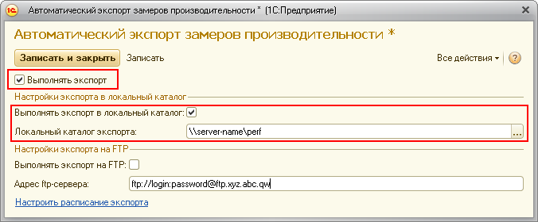
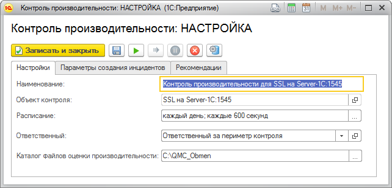

Контрольная процедура "Контроль производительности" является крайне важной для поддержания необходимой производительности и масштабируемости системы.
ВНИМАНИЕ! Данная контрольная процедура является ключевой для обеспечения необходимой производительности работы данной информационной базы. Отказ от выполнения данной контрольной процедуры может привести к серьезным проблемам с производительностью информационной базы.
Для работы контрольной процедуры требуется, чтобы в контролируемую информационную базу была встроена подсистема оценки производительности из инструмента под названием "1С:Библиотека стандартных подсистем 8.2" (БСП), имеющего версию 2.1.2.23 или более позднюю.
Принцип работы контрольной процедуры основан на методике APDEX, которая является широко распространенным международным стандартом оценки производительности информационных систем. Данная методика позволяет охарактеризовать текущую производительность информационной системы числовым коэффициентом в пределах от нуля до единицы.
Перед началом работы контрольной процедуры необходимо очертить круг действий, скорость выполнения которых в исследуемой информационной базе является важной для её работы. Список этих действий назовём ключевыми операциями. К ключевым операциям могут относиться, например, открытие специальных форм или проведение конкретных документов. После того как ключевые операции выбраны требуется, чтобы в контролируемую информационную базу была встроена подсистема оценки производительности из инструмента под названием "1С:Библиотека стандартных подсистем 8.2" (БСП), имеющего версию 2.1.2.23 или более позднюю. После внедрения подсистемы оценки производительности в информационной базе появляется возможность замерять время выполнения ключевых операций, а также хранить данные замеров и периодически экспортировать данные в виде файлов в формате xml. В этих файлах хранится информация о наборе ключевых операций, а также коэффициенты, характеризующие производительность по каждой ключевой операции, рассчитанные по методике Apdex. При работе контрольной процедуры ЦКК получает данные, экспортируемые подсистемой оценки производительности, и анализирует их, поэтому после внедрения подсистемы нужно настроить экспорт результатов оценки производительности в локальный или сетевой каталог или на ftp-сервер и указать путь экспорта данных в поле "Каталог файлов оценки производительности".
Примеры: C:\Temp, \\server_name\perf, ftp://login:password.ftp.xyz.com
На скриншоте ниже изображено окно настройки экспорта данных в подсистеме оценки производительности.

Форма настроки контрольной процедуры "Контроль производительности" выглядит следующим образом:
